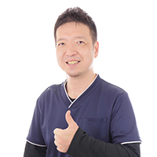
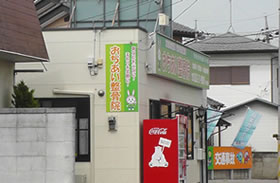
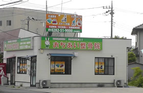

落合 義人（おちあい よしひと）
柔道整復師 / おちあい整骨院 院長
「ケガをしないように最善の策を。ケガをしたら、最良のケアを」
この想いを胸に、2014年におちあい整骨院を開業いたしました。
地域の皆様が痛みやケガで悩まれているとき、いつでも頼れる場所でありたいと考えています。
スポーツトレーナーとして学校部活動やプロチームをサポートしてきた経験を活かし、
スポーツ外傷から日常のケガ・交通事故まで、一人ひとりに合った丁寧な施術を心がけています。
気になることはどんな小さなことでも、ぜひお気軽にご相談ください。
- 【資格】 柔道整復師
- 【学歴】 上三川高等学校 → 作新学院大学 → ナショナル整体・スポーツトレーナー科 → さいたま柔整専門学校
- 2011年 接骨院ふくだ栃木院 院長就任
- 國學院栃木サッカー部・FC栃木 トレーナー活動開始
- 2014年 おちあい整骨院 開業
- 栃木ウーヴァFC トレーナー就任
- 2017年 エイジェック・栃木ゴールデンブレーブス 提携治療院
- 2021年 栃木市魅力発信特使 認定
- 【趣味】 スポーツ観戦・カラオケ・音楽鑑賞
院内のご紹介

